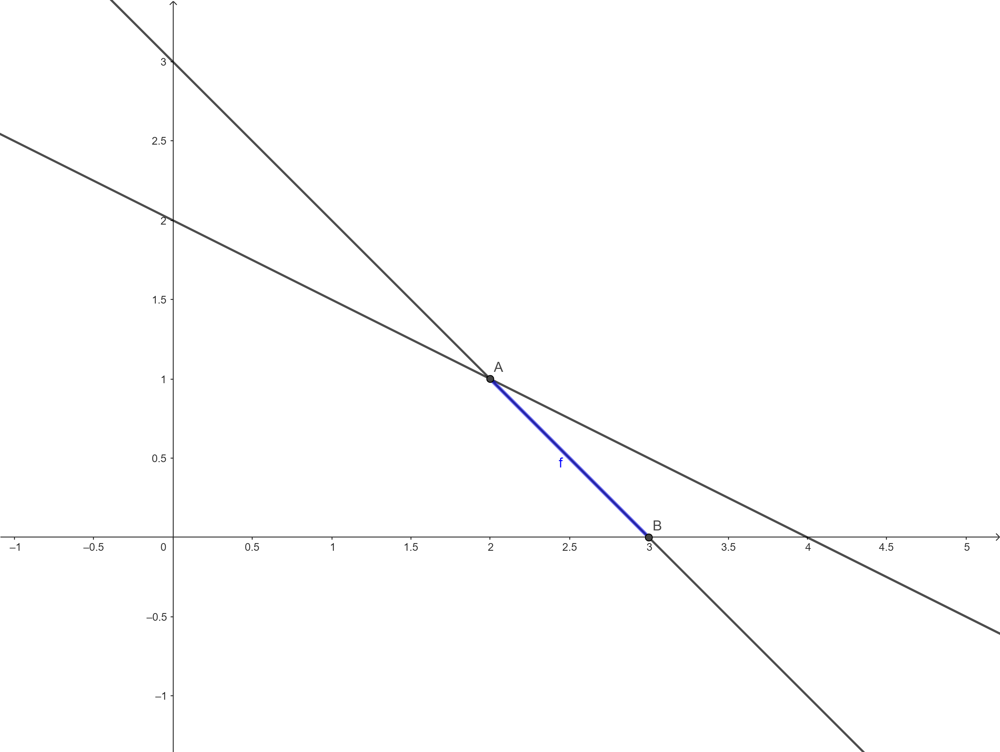

Chapter 4 Simplex Fase I
Notas sobre o algoritmo Simplex Fase I
4.1 Exercicios
Resolva os seguintes modelos de PL:
EXERCICIO 1:
\[\begin{alignat*}{4} & \text{max} & x_1 & + x_2 \\ & \text{Sujeito à} & x_1 & + x_2 &\leq 10\\ & & & \quad x_2 & \geq 11\\ & & x_1 \geq 0 & x_2 \geq 0& \end{alignat*}\]SOLUÇÃO
Colocando na forma padrão:
\[\begin{alignat*}{4} & \text{min} & -x_1 & -x_2 \\ & \text{Sujeito à} & x_1 & + x_2 & + x_3 & & = 10\\ & & & \quad x_2 & & -x_4 & = 11\\ & & x_1 \geq 0 & x_2 \geq 0& \end{alignat*}\]Adicionando variáveis artificiais e trocando a função objetivo:
\[\begin{alignat*}{4} & \text{min} & & & & & \bar{x}_5 & + \bar{x}_6 & \\ & \text{Sujeito à} & x_1 & + x_2 & + x_3 & & \bar{x}_5 & &\leq 10\\ & & & \quad x_2 & & -x_4 & & \quad \bar{x}_6 &\geq 11\\ & & x_1 \geq 0 & x_2 \geq 0& \end{alignat*}\]Colocando na forma tabular:
| VB | X1 | X2 | X3 | X4 | X5 | X6 | b |
|---|---|---|---|---|---|---|---|
| 0 | 0 | 0 | 0 | 1 | 1 | 0 | |
| ?? | 1 | 1 | 1 | 0 | 1 | 0 | 10 |
| ?? | 0 | 1 | 0 | -1 | 0 | 1 | 11 |
Atualizando a tabela, para colocar as variáveis artificiais na base:
- \(L_1 \leftarrow L_1 - L_2 - L_3\)
| VB | X1 | X2 | X3 | X4 | X5 | X6 | b |
|---|---|---|---|---|---|---|---|
| -1 | -2 | -1 | 1 | 0 | 0 | -21 | |
| \(x_5\) | 1 | 1 | 1 | 0 | 1 | 0 | 10 |
| \(x_6\) | 0 | 1 | 0 | -1 | 0 | 1 | 11 |
Selecionando \(x_2\) para entrar na base e \(\bar{x}_5\) para sair, atualizando a tabela com as operações:
- \(L_1 \leftarrow L_1 + 2L_2\)
- \(L_3 \leftarrow L_3 - L_2\)
| VB | X1 | X2 | X3 | X4 | X5 | X6 | b |
|---|---|---|---|---|---|---|---|
| 1 | 0 | 1 | 1 | 2 | 0 | -1 | |
| \(x_2\) | 1 | 1 | 1 | 0 | 1 | 0 | 10 |
| \(x_6\) | -1 | 0 | -1 | -1 | -1 | 1 | 1 |
Chegamos ao fim da Fase I e o valor de \(w > 0\), portanto o problema original é infactível.
EXERCICIO 2: O modelo do agricultor (fim da parte 2):
\[\begin{alignat*}{4} & \text{max} & 2x_1 & + 3x_2 \\ & \text{Sujeito à} & x_1 & + x_2 & = 3\\ & & x_1 & +2x_2 & \leq 4\\ & & x_1 \geq 0 & x_2 \geq 0& \end{alignat*}\]SOLUÇÃO
Colocando na forma padrão:
\[\begin{alignat*}{4} & \text{min} & -2x_1 & -3x_2 \\ & \text{Sujeito à} & x_1 & + x_2 & & = 3\\ & & x_1 & + 2x_2 & + x_3 & = 4\\ & & x_1 \geq 0 & x_2 \geq 0& \end{alignat*}\]Adicionando variáveis artificiais e trocando a função objetivo:
\[\begin{alignat*}{4} & \text{min} & & & & \bar{x}_4 & + \bar{x}_5 & \\ & \text{Sujeito à} & x_1 & + x_2 & & + \bar{x}_4 & & = 3\\ & & x_1 & + 2x_2 & + x_3 & & + \bar{x}_5 & = 4\\ & & x_1 \geq 0 & x_2 \geq 0& \end{alignat*}\]Colocando na forma tabular:
| VB | X1 | X2 | X3 | X4 | X5 | b |
|---|---|---|---|---|---|---|
| 0 | 0 | 0 | 1 | 1 | 0 | |
| ?? | 1 | 1 | 0 | 1 | 0 | 3 |
| ?? | 1 | 2 | 1 | 0 | 1 | 4 |
Atualizando a tabela, para colocar as variáveis artificiais na base:
- \(L_1 \leftarrow L_1 - L_2 - L_3\)
| VB | X1 | X2 | X3 | X4 | X5 | b |
|---|---|---|---|---|---|---|
| -2 | -3 | -1 | 0 | 0 | -7 | |
| \(x_4\) | 1 | 1 | 0 | 1 | 0 | 3 |
| \(x_5\) | 1 | 2 | 1 | 0 | 1 | 4 |
Selecionando \(x_2\) para entrar na base e removendo \(\bar{x}_5\), com as operações:
- \(L_3 \leftarrow L_3/2\)
- \(L_1 \leftarrow L_1 + 3L_3\)
- \(L_2 \leftarrow L_2 - L_3\)
| VB | X1 | X2 | X3 | X4 | X5 | b |
|---|---|---|---|---|---|---|
| -1/2 | 0 | 1/2 | 0 | 3/2 | -1 | |
| \(x_4\) | 1/2 | 0 | -1/2 | 1 | -1/2 | 1 |
| \(x_2\) | 1/2 | 1 | 1/2 | 0 | 1/2 | 2 |
Selecionando \(x_1\) para entrar na base e removendo \(\bar{x}_4\), com as operações:
- \(L_1 \leftarrow L_1 + L_2\)
- \(L_3 \leftarrow L_3 - L_2\)
- \(L_2 \leftarrow L_2/(1/2)\)
| VB | X1 | X2 | X3 | X4 | X5 | b |
|---|---|---|---|---|---|---|
| 0 | 0 | 0 | 1 | 1 | 0 | |
| \(x_1\) | 1 | 0 | -1 | 2 | -1 | 2 |
| \(x_2\) | 0 | 1 | 1 | -1 | 1 | 1 |
chegamos ao fim da Fase com \(w = 0\), portanto o problema original é factível, e podemos continuar com o Simplex Fase II. Removendo as colunas das variáveis artificiais e reinserindo a função objetivo original:
| VB | X1 | X2 | X3 | b |
|---|---|---|---|---|
| -2 | -3 | 0 | 0 | |
| \(??\) | 1 | 0 | -1 | 2 |
| \(??\) | 0 | 1 | 1 | 1 |
Realizando as operações para atualizar a tabela (manter \(x_1\) e \(x_2\) na base):
- \(L_1 \leftarrow L_1 + 2L_2\)
- \(L_1 \leftarrow L_1 + 3L_3\)
| VB | X1 | X2 | X3 | b |
|---|---|---|---|---|
| 0 | 0 | 1 | 7 | |
| \(x_1\) | 1 | 0 | -1 | 2 |
| \(x_2\) | 0 | 1 | 1 | 1 |
Temos então a solução ótima com \(x_B^T = (x_1,x_2) = (2,1)\) e Z = -7. Retomando o custo original temos Z = 7. A solução inicial encontrada (que é a ótima) está no ponto A na Figura abaixo.
